大山
| 日付 | 2010年5月8日（土） |
|---|---|
| 山域 | 丹沢 |
| メンバー | グループ（男2女1） |
| 山行形態 | 日帰り |
| アクセス | 電車、バス |
| ルート (Map) | 大山ケーブル駅→大山→ヤビツ峠 |
友人に誘われ丹沢の大山に登ることにする。
この山に登るのは3年ぶり、前回とは逆のルートを歩く。
9:45 大山ケーブル駅バス停到着。標高315m。
今日は晴れ予報で下界も晴れていたのに、山の方は雲がかかっている。
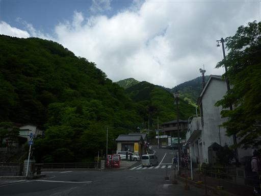
季節は春。観光客が大勢訪れる山なので駐車場は満車だ。
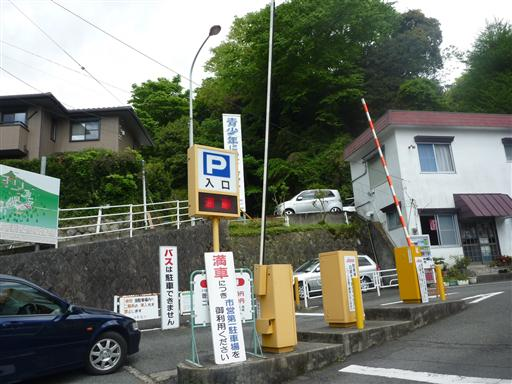
藤の花が咲いている。栽培されているものも良いが、野生の藤もまた良い。
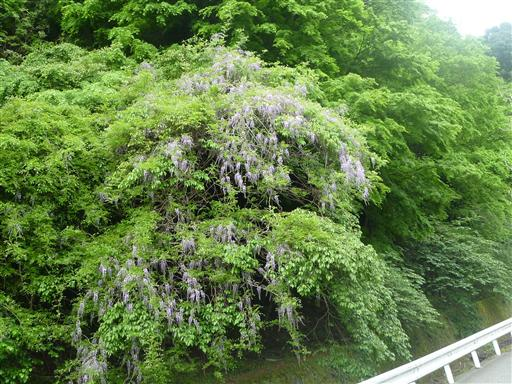
大山へ続く道の入口付近は土産物屋が軒を連ねている。

登山道は坂ではなく階段、石段が続く。
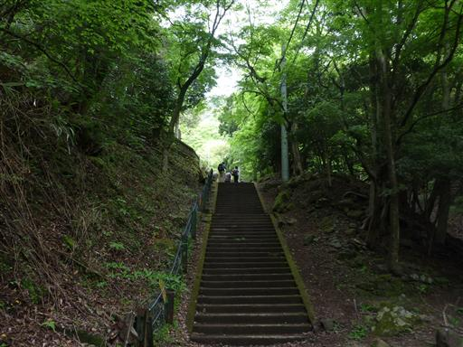
古から多くの参拝者を集めた山だけあって、登山道には建物が多く建っている。
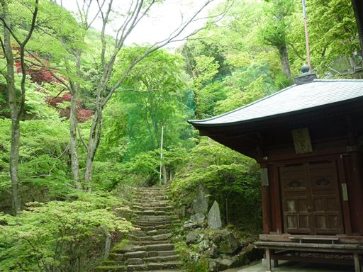
大山寺に到着。ケーブルカーはもっと上まで通じているため、この辺りは人が少ない。
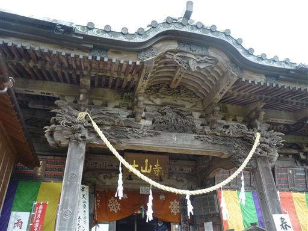
阿夫利神社。天気は悪いが前回ここに来たときよりはましだ。
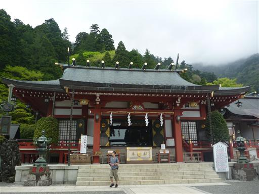
阿夫利神社の近くの柵の中には鹿がいる。
丹沢には鹿が無数にいるのに、なぜ柵で囲んでいるのだろう？

ここから先もまだまだ急な石段が続く。
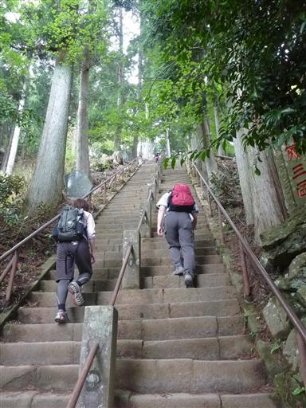
登山道脇には巨大な杉が林立している。
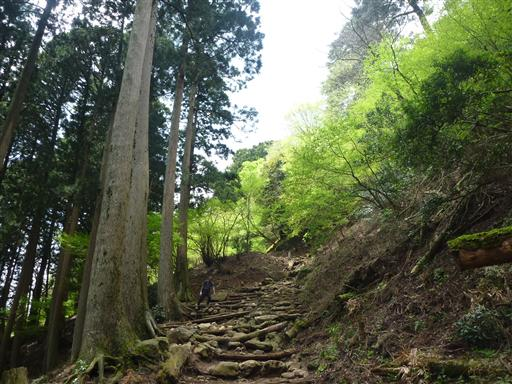
道端に咲くヤマルリソウ。淡い紫色の花はカメラではあまり色が出ない。
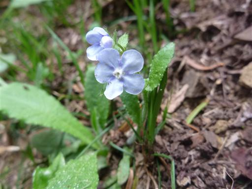
12:26 大山山頂到着。標高1252m。
雨乞いの山だけあって、今日も天気が悪い。

山頂に建つ阿夫利神社奥の院。

山頂で昼食をとった後、下山を開始する。天気は下り坂だ。
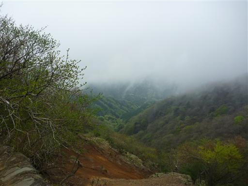
14:05 ヤビツ峠バス停到着。標高760m。
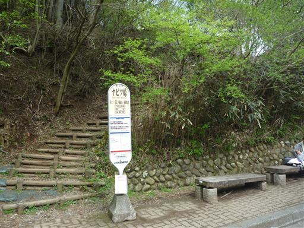
他の山行記録